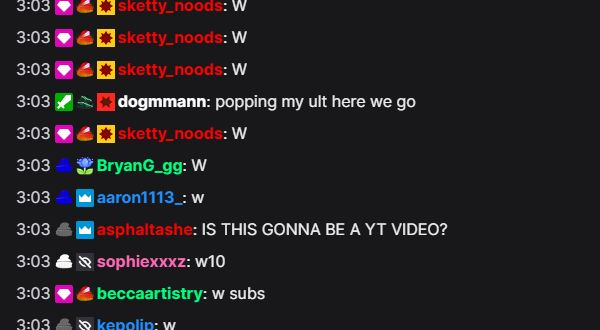

Quick setup
No global setting is required: choose one option in the Dock's Username colors section.
- Open the Social Stream Ninja extension or desktop app settings.
- Under Main chat overlay & control dock, expand Username colors.
- Turn on Generate colors for uncolored names. This keeps colors supplied by the chat platform and fills in missing ones.
- Use the updated Dock link. Existing Dock or OBS browser-source URLs also work if you add
&randomcolorand refresh them.
Choose the color behavior
Use one main color option at a time so the result is predictable.
| Dock option | Result | Best for |
|---|---|---|
| Generate colors for uncolored names | Keeps platform-provided name colors and assigns a consistent color when one is missing. | Most users |
| Generate colors for every name | Assigns every username a consistent generated color, replacing colors from the platform. | A fully mixed-color chat |
| Use source-provided username colors | Displays a color only when the chat platform supplies one. | Platforms such as Twitch that provide username colors |
The generated colors are stable: the Dock hashes the user ID, username, or display name so the same person keeps the same color. The global color settings remain available when colors need to be added to outbound payloads and other surfaces.

nameColor values.If the names are still one color
- Confirm one option is on under the Dock's Username colors section.
- For platforms without username colors, choose Generate colors for uncolored names.
- Check that the Dock URL contains
&color,&randomcolor, or&randomcolorall. - Refresh any Dock tab or OBS Browser Source that was already open.
- Check your custom CSS for a rule that forces every
.hl-nameto the same color.
More control with CSS
Add CSS through the Dock settings, the &css= or &b64css= URL option, or OBS Browser Source custom CSS. Use !important when overriding a name color supplied by a platform.
Use one color for every name
.hl-name {
color: #ffd166 !important;
}Choose colors by platform
.highlight-chat[data-source-type="youtube"] .hl-name {
color: #ff5a5f !important;
}
.highlight-chat[data-source-type="twitch"] .hl-name {
color: #b794f4 !important;
}
.highlight-chat[data-source-type="kick"] .hl-name {
color: #53fc18 !important;
}Highlight moderators and VIPs
.highlight-chat.mod .hl-name {
color: #5eead4 !important;
}
.highlight-chat.vip .hl-name {
color: #f472b6 !important;
}CSS can reliably target a platform or role, but the standard Dock does not add a username as a CSS class or attribute. For fixed per-person color rules, use the built-in generated colors or a custom overlay that maps usernames to colors in JavaScript.